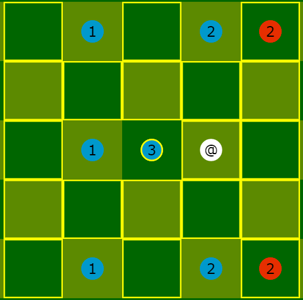
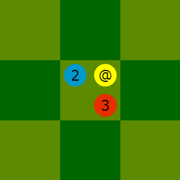
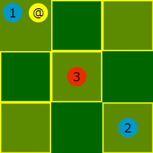

Introduction
Révisions
Le matériel
Objectif du jeu
Mise en place
Tour de jeu
Notation des coups
Versionnage
Remerciements
Introduction
"Baltek" est un jeu de réflexion, en tour par tour, inspiré du football et conçu
d'après les principes suivants :
- Jeu facilement réalisable à la main,
- avec peu de règles,
- sans hasard,
- avec plusieurs actions par tour.
- La balle bouge plus vite que les footballeurs.
- La coordination des footballeurs est essentielle.
Le nom du jeu est construit avec des sons de "balle" (BAL) et de "technique" (TEK).
Révisions
Ce document est la version 1.1 des règles de Baltek en français.
La table ci-dessous résume les motivations de chaque version.
| Version |
Description |
| 1.0 |
Création. |
| 1.1 |
Clarification de l'option de sprint.
Notation plus compacte des coups.
Rédaction en HTML.
Copies d'écran depuis l'implémentaiton HTML/Javascript. |
Le matériel
Voici le matériel, illustré sur le schéma ci-dessus :
- 1 balle blanche, avec l'étiquette "@".
- Une équipe de 6 footballeurs bleus.
- Une équipe 6 footballeurs rouges.
- Chaque équipe se compose de :
- 1 avant-centre de force 3.
- 2 ailiers de force 2.
- 3 arrières de force 1.
- Le terrain est construit à l'aide de 52 cases vertes.
- La case "a3", avec une étiquette "#", est le but défendu par l'équipe bleue.
- La case "l3", avec une étiquette "#", est le but défendu par l'équipe rouge.
Les coordonnées ainsi que les étiquettes "@" et "#" sont utilisées pour la notation des coups.
Objectif du jeu
- Baltek se joue à deux joueurs.
- Chaque joueur dirige une équipe de 6 footballeurs.
- Les joueurs décident de l’attribution des équipes.
- À son tour de jeu, chaque joueur déplace la balle et ses footballeurs,
en cherchant à envoyer la balle dans le but adverse.
- Le gagnant est le joueur qui atteint en premier le score de 2 buts.
Mise en place
- En début de partie, ainsi qu'après chaque but marqué, les footballeurs sont placés
sur le terrain à leurs positions d’engagement.
- Les positions d’engagement sont fixes.
- Les positions d’engagement des deux équipes sont symétriques,
sauf celles des avant-centres.
- L'équipe bleue effectue toujours le premier engagement de la partie.
- L'équipe qui vient de marquer un but laisse l'autre équipe engager.
La figure suivante représente l’engagement par l’équipe bleue.
La figure suivante représente l’engagement par l’équipe rouge.
Tour de jeu
Les actions, options, compensations, crédits et bonus
- À son tour de jeu, chaque joueur choisit des actions et options,
qui, selon le contexte, exigent des compensations.
- Ces choix coûtent des crédits ou bonus.
- Chaque joueur dispose de :
- 3 crédits, au début de chaque tour ;
- 1 bonus, au début de chaque engagement.
- À son tour de jeu, chaque joueur peut dépenser 0, 1, 2 ou 3 crédits,
et 0 ou 1 bonus.
- Les actions, options et compensations sont les suivantes :
- Courir : déplacer un footballeur ;
coût : 1 crédit.
- Sprint : option pour augmenter le déplacement d'un footballeur ;
coût : 1 bonus.
- Passer/tirer : déplacer la balle ;
coût : 1 crédit.
- Duel : compensation de force pour posséder la balle ;
coût : 1 crédit par unité de force.
- Lob : compensation de force pour déplacer la balle ;
coût : 1 crédit par unité de force.
Action "courir"
- L’action "courir" coûte 1 crédit et permet de déplacer un footballeur de 1 case.
- Chacune des cases du carré 3 x 3, centré sur le footballeur déplacé,
sont des destinations possibles, sauf si :
- celle-ci est en dehors du terrain ;
- celle-ci est une case de but ;
- celle-ci accueille déjà un footballeur de la même équipe.
- Un footballeur ne peut pas "courir" plus de une fois par tour.
- L’action "courir" ne déplace pas la balle.
Exemple : avec des bordures jaunes, les destinations possibles pour le footballeur bleu "3".
Option "sprint"
- L'option "sprint" coûte 1 bonus et étend à 2 cases le déplacement d'un footballeur.
- L'option "sprint" doit toujours être combinée à l'action "courir".
- Chacune des cases du carré 5 x 5, centré sur le footballeur déplacé,
sont des destinations possibles, sauf si :
- celle-ci est en dehors du terrain ;
- celle-ci est une case de but ;
- celle-ci accueille déjà un footballeur de la même équipe.
- Le joueur ne peut dépenser son bonus qu'une seule fois entre deux engagements.
Exemple : avec des bordures jaunes, les destinations possibles pour le footballeur bleu "3".

Action "passer/tirer"
- Les actions "passer à un footballeur", "envoyer sur une case vide" et "tirer au but"
obéissent aux mêmes règles.
- L’action "passer/tirer" coûte 1 crédit et permet,
si les conditions générales et de forces sont satisfaites,
de déplacer la balle de 1 ou 2 cases en horizontal, vertical ou diagonal,
mais sans courber sa trajectoire.
- Voici les conditions générales à satisfaire :
- Le joueur a un footballeur "passeur/tireur" dans la case de départ de la balle.
- Dans ce tour, le "passeur/tireur" n'a pas déjà "passé/tiré".
- La case d’arrivée de la balle doit être sur le terrain.
- La case d’arrivée de la balle n'est pas le but défendu par le joueur.
- La case d’arrivée de la balle peut être vide ou occupée.
- Voici les conditions de forces à satisfaire :
- Si le "passeur/tireur" partage sa case avec un adversaire,
alors le "passeur/tireur" doit :
- soit égaler ou surpasser la force de son adversaire,
- soit compenser son déficit de force par "duel".
- Si le "passeur/tireur" déplace la balle par-dessus un adversaire,
alors le "passeur/tireur" doit :
- soit égaler ou surpasser la force de son adversaire,
- soit compenser son déficit de force par "lob".
Exemple : avec des bordures jaunes, les destinations possibles pour la balle
par le footballeur bleu "3" ; aucune n'exige duel ou lob.
Compensation "duel"
- Cette compensation peut être exigée par l’action "tirer/passer".
- Le "duel" compense le déficit de force du "passeur/tireur"
vis-à-vis de l’adversaire qui partage sa case.
- Le "duel" coûte 1 crédit par unité de force compensée.
Exemples : pour posséder la balle, le footballeur bleu "2" doit livrer 1 duel ;
et footballeur bleu "1" doit livrer 2 duels.


Compensation "lob"
- Cette compensation peut être exigée par l’action "tirer/passer".
- Le "lob" compense le déficit de force
du "passeur/tireur" vis-à-vis de l’adversaire par-dessus lequel passe la balle.
- Le "lob" coûte 1 crédit par unité de force compensée.
- La compensation de lob n'est pas nécessaire pour passer par-dessus
un footballeur de son équipe.
Exemples : pour transmettre la balle au footballeur beu "2", le footballeur bleu "1"
doit effectuer 1 lob, dans le contexte de gauche,
et 2 lobs dans le contexte de droite.

Notation des coups
Si utile, la partie se note comme dans l'exemple suivant.
@d3 f3g3 d1e1 / h3g3 g5f5 i3h3
e1e2 d5e4 f5g4 / f5e4 g1f1 i1h2
@e4 @g4+ / g3g4 i5i4 @i4
...
@# /
Optionellement, des précisions sont apportées comme dans l'exemple suivant.
#! baltek 1.1
#@ bernard@bois.fr robert@riviere.fr
#: 2014-12-24 11:09:30
@d3 f3g3 d1e1 / h3g3 g5f5 i3h3
e1e2 d5e4 f5g4 / f5e4 g1f1 i1h2
@e4 @g4+ / g3g4 i5i4 @i4
...
@# /
#: 2014-12-24 11:30:00
# Le bonus des rouges a été bien joué.
Voici les conventions de ce format de notation structuré en lignes :
- Le caractère " ", optionnellement répété, sépare les mots.
- Une ligne commençant par "#" est un commentaire ou pseudo-commentaire,
et est toujours optionnel.
- "
# " annonce un commentaire libre.
- "
#! baltek i.j" annonce
la version "i.j" du format de notation "baltek" ;
utilisable une seule fois, en première ligne.
- "
#@" annonce
les identifiants choisis par les deux joueurs,
dans l'ordre "bleu", puis "rouge" ;
utilisable une seule fois.
- "
#:" annonce
, dans un format ISO,
la date, puis optionnellement l'heure ;
utilisable plusieurs fois.
- Une ligne non-vide, qui n'est pas un commentaire,
décrit un tour "bleu", suivi d'un tour "rouge" optionnel.
- "
/" termine le tour "bleu".
La fin de ligne termine le tour "rouge".
- Chaque tour est composé de 0, 1, 2 ou 3 actions.
- L'action "courir" est notée en un mot
commençant par la case de départ et finissant par la case d’arrivée.
Exemple :
g3f3
- Pour l'option "sprint", "*" est ajouté au mot de l'action.
Exemple :
g3e2*
- L’action "passer/tirer" est notée en un mot
commençant par "@" et finissant par la case d’arrivée.
Exemple :
@c3
- Le "tir au but" est abrégé par le mot suivant :
@#
- Pour la compensation de "duel", "+" est ajouté au mot de l'action.
Exemple :
@c3+
- Pour deux duels, "++" est ajouté.
Exemple :
@c3++
- Pour la compensation de "lob", "!" est ajouté au mot de l'action.
Exemple :
@c3!
- Pour deux lobs, "!!" est ajouté au mot de l'action.
Exemple :
@c3!!
- Pour cumuler "duel" et "lob", "+!" est ajoutée au mot de l'action.
Exemple :
@c3+!
Versionnage
- Les versions des règles sont identifiées avec deux indices entiers "i.j".
- La première version est "1.0".
- L'indice majeur "i" est incrémenté de 1 lorsque les règles du jeu sont modifiées.
L'indice mineur "j" est alors réinitialisé à 0.
- L'indice mineur "j" est incrémenté de 1 lorsque les textes ou les illustrations
ou le format de notation ou la structure du document changent, mais pas les règles.
- Chaque traduction fait évoluer son indice mineur "j" en partant de 0.
Remerciements
Je remercie mes fils "A" et "C" pour leurs patiences et commentaires
lors des parties d'essais de Baltek et autres tentatives de jeu de football.
Ma compagne "P" avec sa durée de réflexion de joueuse d'échecs a suscité
la création du "bonus de sprint" afin de dynamiser les parties de Baltek ;
je la remercie.
 Copyright Lucas Borboleta 2017-0805-2146
Copyright Lucas Borboleta 2017-0805-2146